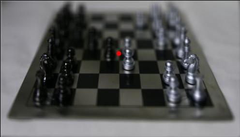
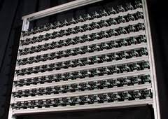
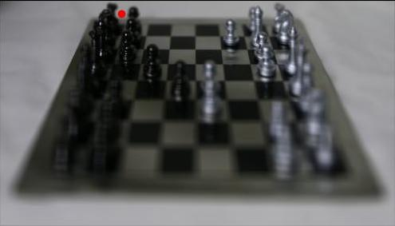
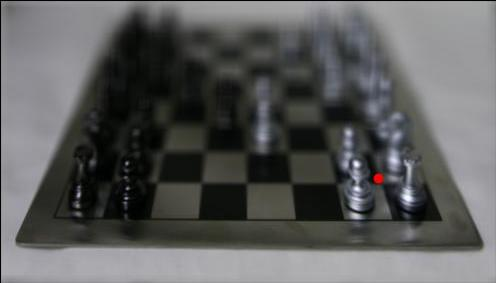

Lightfield Camera

Overview
The objective of this project is to simulate visual effects that are typically performed with a camera at the time of shooting, but instead as a post-processing operation. To achieve this, we use a collection of data from the Stanford Light Field Archive, whose setup is pictured below, giving us access to the output of numerous cameras over a reguarly spaced grid.

Depth Refocusing
Lightfield data is captured from varying positions in the same two-dimensional plane such that subjects closer to the camera array will shift much more drastically between subsequent images than the subjects farther from the sensors. Consequently, if we simply take the average of all images in the array, the farther subjects will stay in focus and the content in the foreground will end up blurred. If we instead compensate by shifting each image proportionally to the distance that the corresponding camera lies from the center camera in the array, the result will be closer objects staying in focus rather than farther ones. The magnitude of these shifts, which we denote as $\alpha,$ determines the strength of this effect. Below, we illustrate the progression of 14 evenly spaced $\alpha$ values between -0.4 and 0.6, which produces a refocusing effect at various depths.


Aperture Adjustment
A single image from one camera in the array can be viewed as a pinhole image with the smallest possible aperture in the context of a lightfield. As the size of the aperture increases, a broader stream of light rays is allowed to pass through, creating a narrower field of view. We can simulate widening the aperture by taking the average of increasingly large, square subarrays of the entire lightfield grid, spreading from the center of the lightfield array. This roughly corresponds to linearly expanding the radius of the aperture. We show the result of broadening the aperture radius from 0 to 8 in integer increments below.


Interactive Refocusing
Now, we want to refocus an image dynamically based on user input. Upon displaying the center image in the camera array and detecting a clicked location, the image should interactively refocus at the clicked depth, bringing clarity to all subjects in the photo at that depth while blurring the rest. This entails extracting the vertical pixel component of the clicked point and dividing by the vertical resolution of the photos to obtain an approximate $\alpha$ value. Hence, an $\alpha$ near 0 corresponds to focusing on the background and an $\alpha$ approaching 1 results in focusing on the foreground. With this $\alpha$ depth approximation in hand, we can apply the shifting and averaging procedure described in the depth refocusing section, but for only a single frame. The output is shown below on a few different clicked points.

